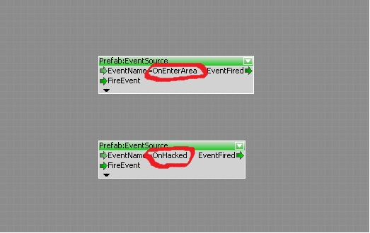
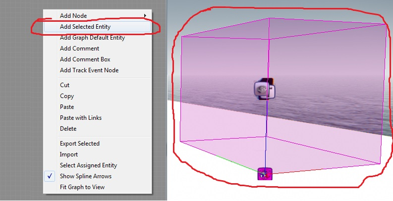
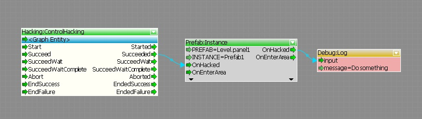

Overview
In Flow Graph, you can communicate directly to and from a prefab instance just like an entity by using prefab events. Just create an event inside a prefab, give it a name and then reference the prefab instance as you normally do an entity.
Steps to use prefab events
- Inside any prefab flow graph, add Prefab:EventSource nodes for each event you want (note: you must be inside a prefab's flow graph otherwise will get errors)
- Assign a name to the event

- Outside the prefab's flowgraph, in any entity's flowgraph, select a prefab instance you want to send/receive events from and click "Add Selected Entity":

- Connect logic to the prefab instance events

Important notes
- Whenever deleting Prefab:EventSource nodes, this will remove the event but won't remove flownode port connections to that event. As a rule of thumb, always remove all uses of that event before removing.
- Always make sure to communicate with other level designers when removing prefab events as you might have removed the event which is referenced in other levels.